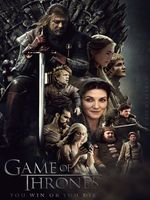

Игра престолов
Описание Игра престолов

К концу подходит время благоденствия, и лето, длившееся почти десятилетие, угасает. Вокруг средоточия власти Семи королевств, Железного трона, зреет заговор, и в это непростое время король решает искать поддержки у друга юности Эддарда Старка. В мире, где все — от короля до наемника — рвутся к власти, плетут интриги и готовы вонзить нож в спину, есть место и благородству, состраданию и любви. Между тем, никто не замечает пробуждение тьмы из легенд далеко на Севере — и лишь Стена защищает живых к югу от нее.
Ошибки в сериале
Внимание! Список ошибок в фильме может содержать спойлеры. Будьте осторожны.
2 сезон, 5 серия. Когда Кейтлин Старк разговаривает в лесу с Бриеной, левый бок белого коня последней весь в грязи. В следующем кадре конь совершенно чистый.
В 4 серии 8 сезона в одной из сцен во время пира на столе можно увидеть картонный стакан для кофе. Спустя несколько дней после выпуска эпизода, HBO стерли бумажную чашку из серии, размещённой на HBO Go и других потоковых сервисах.